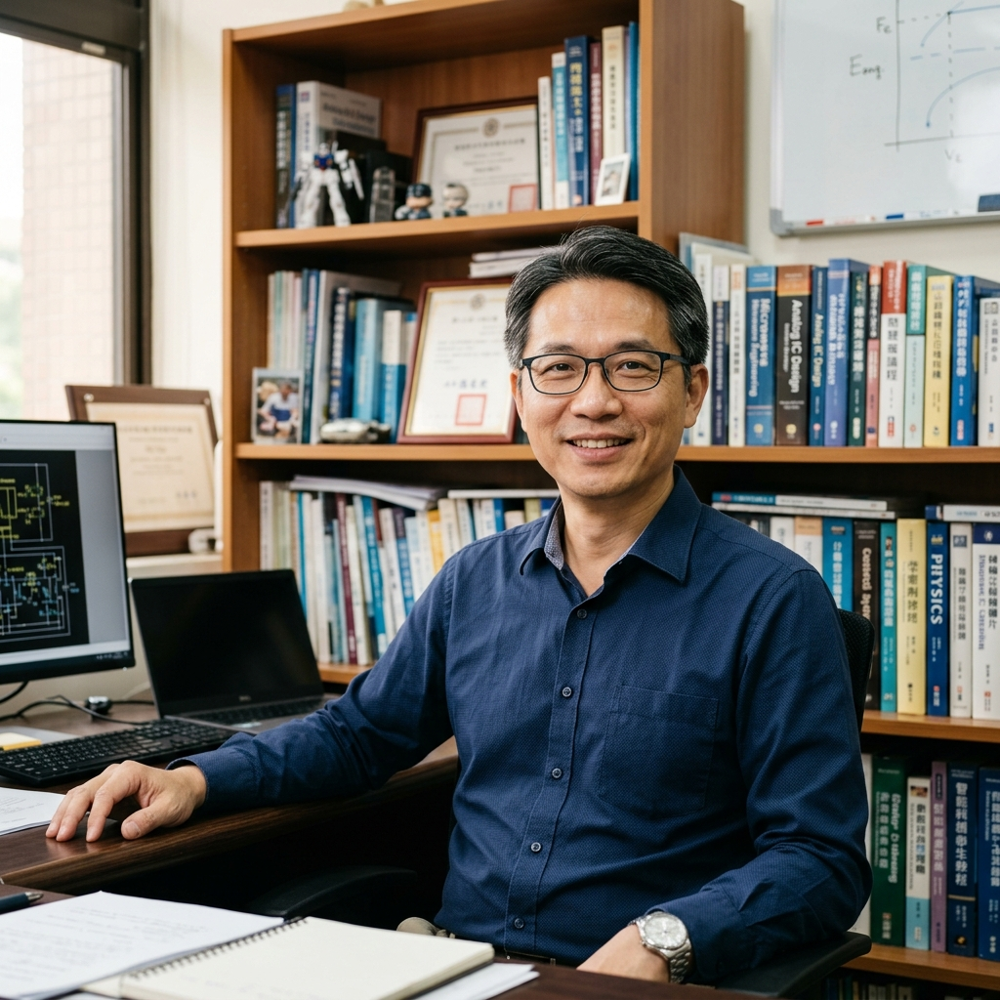

吳順德 副教授
國立臺灣師範大學機電工程學系 副教授
歡迎來到訊號處理實驗室。本人畢業於國立交通大學電機與控制工程研究所取得博士學位，曾於高科技產業（思源科技、泰豐光電、英保達）擔任研發主管，兼具學術研究與扎實的產業應用經驗。目前實驗室研究著重於利用「時頻分析」與「機器學習」技術，解決複雜系統中的錯誤診斷、生醫訊號辨識以及智慧製造的核心問題。
數位訊號處理
時頻分析 (EMD/HHT)
機械錯誤診斷
生醫影像與訊號
最新消息
- 2026/05/18 恭喜實驗室碩士班同學榮獲「中華民國系統科學與工程研討會」優秀論文獎。
- 2026/03/12 吳順德教授受邀於國際智慧製造論壇擔任特邀演講嘉賓，分享旋轉機械故障檢測研究。
- 2025/12/20 本實驗室與半導體量測設備大廠之產學合作案圓滿結案，研究成果投入實際技術轉移。
實驗室核心優勢
本實驗室有別於一般僅偏重學術理論研究的實驗室，特別強調「理論與產業實務的深度結合」：
- 業界實務導向：教授擁有英保達資深經理、思源科技主任工程師等豐富經歷，研究主題皆為產業實際面臨的工程難題。
- 全方位技能養成：從演算法推導（MATLAB/Python）、硬體電路設計、嵌入式系統開發（DSP/ARM）到實際系統量測，培養學生成為跨領域工程師。
- 優質產學資源：積極開展與業界大廠之產學合作，學生在校期間即可參與真實產業專案，對未來就業具備極強競爭力。
個人學經歷
個人學歷
1999 - 2004
國立交通大學 電機與控制工程 博士
個人經歷
2012 - 至今
國立臺灣師範大學 機電工程學系 副教授
2012 - 2015
國立臺灣師範大學 通識中心副主任 / 研發處產學合作組組長
2009 - 2012
國立臺灣師範大學 機電工程學系 助理教授
2006 - 2009
英保達資深經理 / 泰豐光電經理
2004 - 2006
思源科技主任工程師
2001 - 2004
中國科技大學資管系 助理教授 / 精密儀器發展中心專案副研究員
授課資訊
第一學期
- 程式設計
- 物件導向程式設計
- 感測器原理與應用
- 自動化工程專題製作(二)
第二學期
- 數位邏輯設計
- 數位邏輯實驗
- 智慧製造技術
- 應用電子學實驗
- 自動化工程專題製作(一)